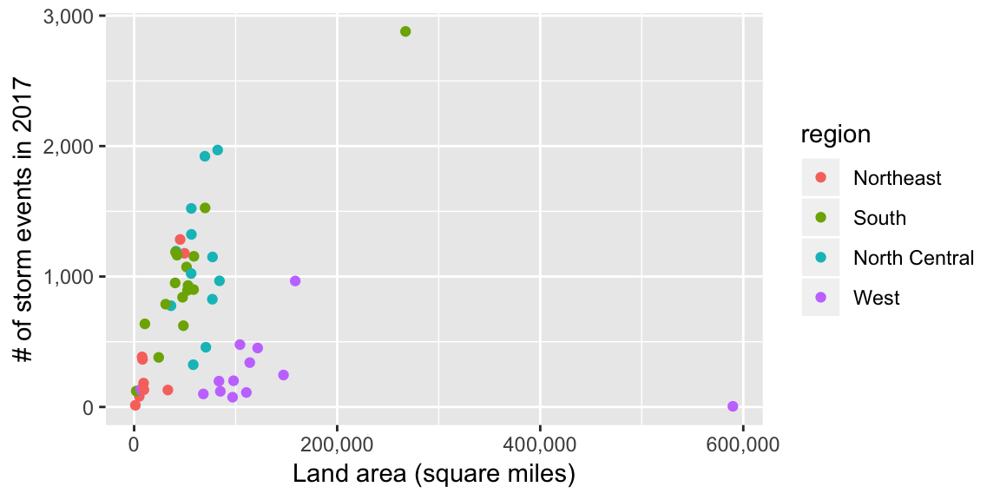
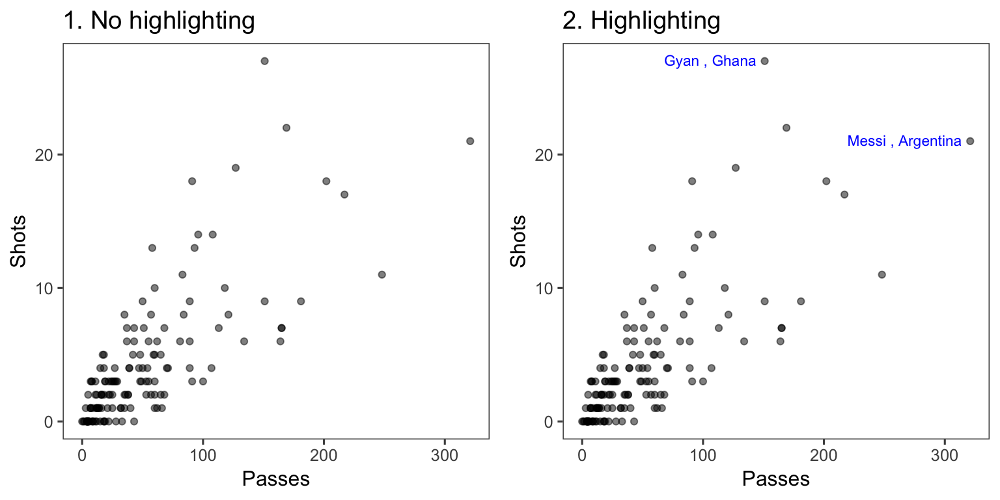
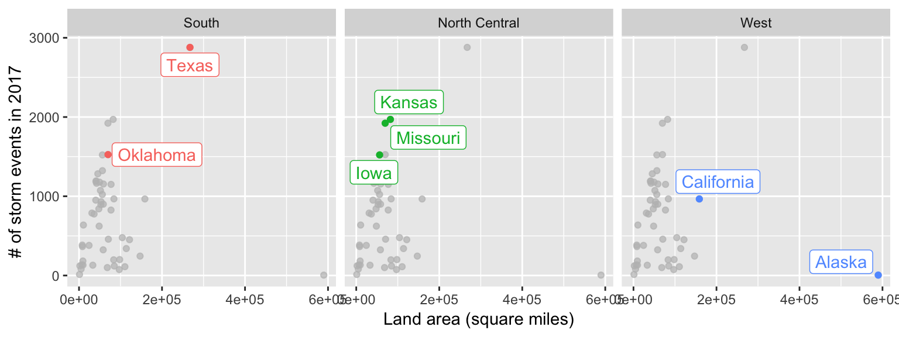
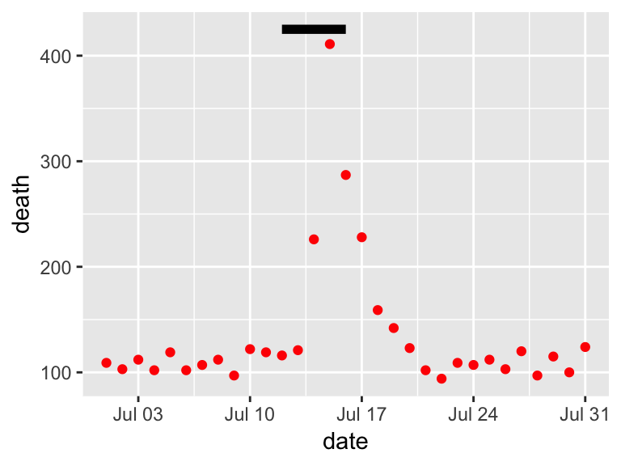
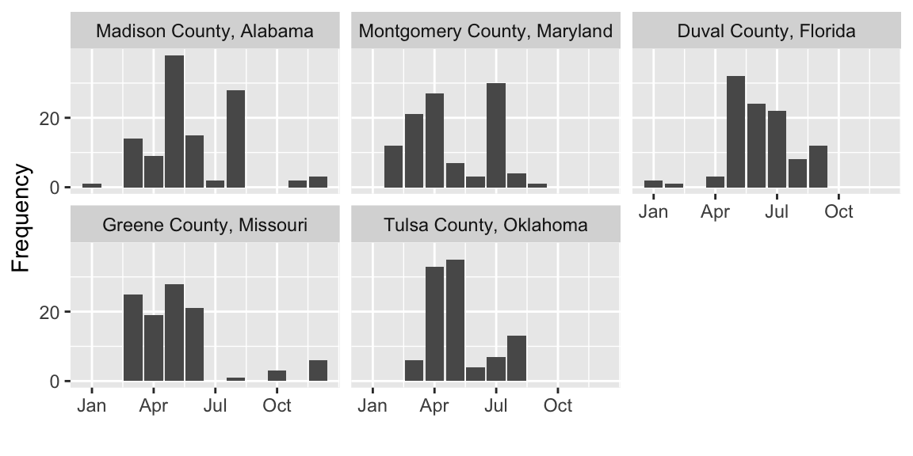
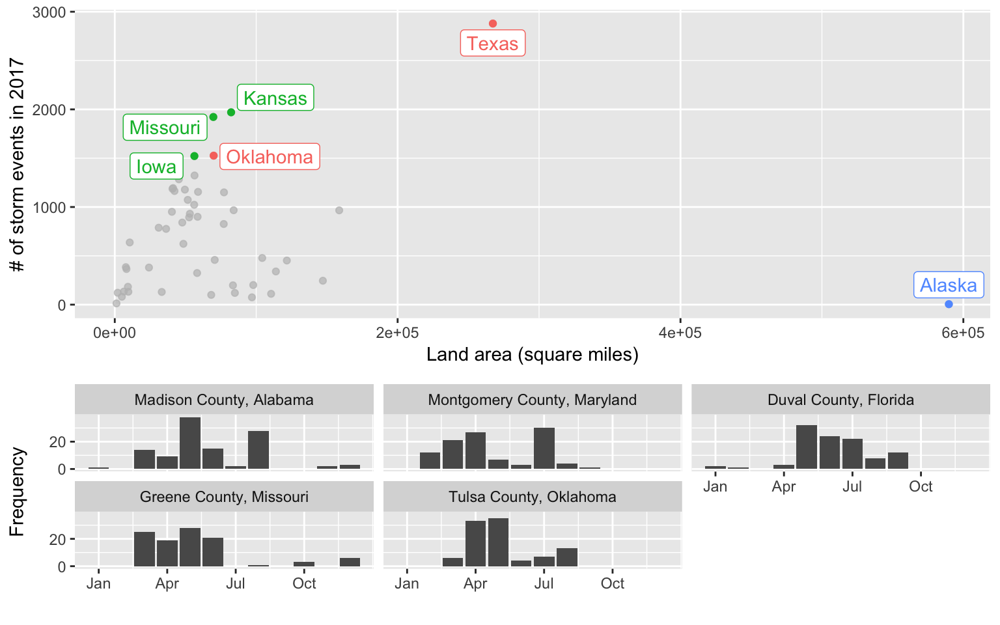
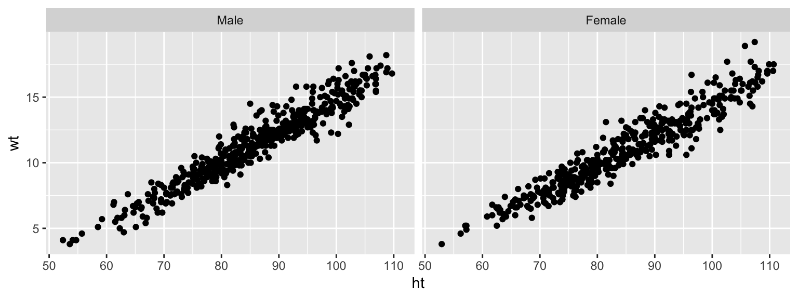

Chapter 9 Reporting results #2a
Download a pdf of the lecture slides covering this topic.
9.1 Example data
This week, we’ll be using some example data from NOAA’s Storm Events Database. This data lists major weather-related storm events during 2017. For each event, it includes information like the start and end dates, where it happened, associated deaths, injuries, and property damage, and some other characteristics.
See the in-course
exercises for this week for more on getting and cleaning this data. As part of the in-course
exercise, you’ll be making the following plot and saving it as the object storm_plot:

We’ll be using the data and this plot in the next sections.
9.2 ggplot2 extras and extensions
9.2.1 scales package
The scales package gives you a few more options for labeling with
your ggplot scales. For example, if you wanted to change the notation
for the axes in the plot of state area versus number of storm events,
you could use the scales package to add commas to the numeric axis values.
For the rest of these slides, I’ve saved the ggplot object with out plot to
the object named storm_plot, so we don’t have to repeat that code every time.
library(scales)
storm_plot +
scale_x_continuous(labels = comma) +
scale_y_continuous(labels = comma)
The scales package also includes labeling functions for:
- dollars (
labels = dollar) - percent (
labels = percent)
9.2.2 ggplot2 extensions
The ggplot2 framework is set up so that others can create packages that “extend”
the system, creating functions that can be added on as layers to a ggplot object.
Some of the types of extensions available include:
- More themes
- Useful additions (things that you may be able to do without the package, but that the package makes easier)
- Tools for plotting different types of data
There is a gallery with links to ggplot2 extensions at https://www.ggplot2-exts.org.
This list may not be exhaustive—there may be other extensions on CRAN or on GitHub
that the package maintainer did not submit for this gallery.
9.2.3 More ggplot2 themes
You have already played around a lot with using ggplot themes to change how your
graphs look.
Several people have created packages with additional themes:
ggthemesggthemrggtechggsci
library(ggthemes)
library(gridExtra)
a <- storm_plot +
theme_fivethirtyeight() +
ggtitle("Five Thirty Eight")
b <- storm_plot +
theme_economist() +
ggtitle("Economist")
c <- storm_plot +
theme_excel() +
ggtitle("Excel")
d <- storm_plot +
theme_few() +
ggtitle("Stephen Few")
grid.arrange(a, b, c, d, ncol = 2)
9.2.4 Other useful ggplot2 extensions
Other ggplot2 extensions do things you might have been able to figure out how
to do without the extension, but the extension makes it much easier to do.
These tasks include:
- Highlighting interesting points
- “Repelling” text labels
- Arranging plots
9.2.4.1 Repelling / highlighting with text labels
The first is repelling text labels. When you add labels to points on a plot, they often overlap:

The ggrepel package helps make sure that these labels don’t overlap:

It may be too much to label every point. Instead, you may just want to
highlight notable point.
You can use the gghighlight package to do that.
library(gghighlight)
storm_plot + facet_wrap(~ region) +
gghighlight(area > 150000 | n > 1500, label_key = state)
The gghighlight package also works for things like histograms. For example, you could
create a dataset with the count by day-of-year of certain types of events:
storms_by_month <- storms_2017 %>%
filter(event_type %in% c("Flood", "Flash Flood", "Heavy Rain")) %>%
mutate(month = month(begin_date_time, label = TRUE)) %>%
group_by(month, event_type) %>%
count() %>%
ungroup()
storms_by_month %>%
slice(1:4)## # A tibble: 4 x 3
## month event_type n
## <ord> <chr> <int>
## 1 Jan Flash Flood 113
## 2 Jan Flood 255
## 3 Jan Heavy Rain 80
## 4 Feb Flash Flood 65ggplot(storms_by_month, aes(x = month, y = n, group = event_type)) +
geom_bar(stat = "identity") +
labs(x = "Month", y = "# of events") +
gghighlight(max(n) > 400, label_key = event_type) +
facet_wrap(~ event_type, ncol = 1)
9.2.4.2 Arranging plots
You may have multiple related plots you want to have as multiple panels of a
single figure.
There are a few packages that help with this. One very good one is patchwork.
You need to install this from GitHub:
Find out more: https://github.com/thomasp85/patchwork#patchwork
Say we want to plot seasonal patterns in events in the five counties with
the highest number of events in 2017. We can use dplyr to figure out these
counties:
top_counties <- storms_2017 %>%
group_by(fips, state, cz_name) %>%
count() %>%
ungroup() %>%
top_n(5, wt = n) Then create a plot with the time patterns:
library(forcats)
top_counties_month <- storms_2017 %>%
semi_join(top_counties, by = "fips") %>%
mutate(month = month(begin_date_time),
county = paste(cz_name, " County, ", state, sep = "")) %>%
count(county, month) %>%
ggplot(aes(x = month, y = n)) +
geom_bar(stat = "identity") +
facet_wrap(~ fct_reorder(county, n, .fun = sum, .desc = TRUE), nrow = 2) +
scale_x_continuous(name = "", breaks = c(1, 4, 7, 10),
labels = c("Jan", "Apr", "Jul", "Oct")) +
scale_y_continuous(name = "Frequency", breaks = c(0, 20))Here’s this plot:

Now that you have two ggplot objects (storm_plot and top_counties_month), you can use
patchwork to put them together:

A slightly fancier version:
(storm_plot + theme(legend.position = "top") +
gghighlight(n > 1500 | area > 200000,
label_key = state)) +
top_counties_month +
plot_layout(ncol = 1, heights = c(2, 1))
Other packages for arranging ggplot objects include:
gridExtracowplot
9.3 In-course exercise
9.3.1 Getting and cleaning the example data
This week, we’ll be using some example data from NOAA’s Storm Events Database.
This data lists major weather-related storm events during 2017.
For each event, it includes information like the start and end dates, where it
happened, associated deaths, injuries, and property damage, and some other
characteristics.
Each row is a separate event. However, often several events are grouped together
within the same episode.
Some of the event types are listed by their county ID (FIPS code) (“C”), but some are listed
by a forecast zone ID (“Z”). Which ID is used is given in the column CZ_TYPE.
- Go to https://www1.ncdc.noaa.gov/pub/data/swdi/stormevents/csvfiles/ and download the bulk storm details data for 2017, in the file that starts “StormEvents_details” and includes “d2017”.
- Move this into a good directory for your current working directory and read it in
using
read_csvfrom thereadrpackage. - Limit the dataframe to: the beginning and ending dates and times, the episode ID, the event ID, the state name and FIPS, the “CZ” name, type, and FIPS, the event type, the source, and the begining latitude and longitude and ending latitude and longitude
- Convert the beginning and ending dates to a “date-time” class (there should be one column for the beginning date-time and one for the ending date-time)
- Change state and county names to title case (e.g., “New Jersey” instead of “NEW JERSEY”)
- Limit to the events listed by county FIPS (
CZ_TYPEof “C”) and then remove theCZ_TYPEcolumn - Pad the state and county FIPS with a “0” at the beginning (hint: there’s
a function in
stringrto do this) and then unite the two columns to make onefipscolumn with the 5-digit county FIPS code - Change all the column names to lower case (you may want to try the
rename_allfunction for this) - There is data that comes with R on U.S. states (
data("state")). Use that to create a dataframe with the state name, area, and region - Create a dataframe with the number of events per state in 2017. Merge in the state information dataframe you just created. Remove any states that are not in the state information dataframe
- Create the following plot:

9.3.1.1 Example R code
Read in the data using read_csv. Here’s the code I used. Yours might be a bit different,
depending on the current name of the file and where you moved it.
library(readr)
library(dplyr)
storms_2017 <- read_csv("data/StormEvents_details-ftp_v1.0_d2017_c20180918.csv")## Parsed with column specification:
## cols(
## .default = col_character(),
## BEGIN_YEARMONTH = col_integer(),
## BEGIN_DAY = col_integer(),
## BEGIN_TIME = col_integer(),
## END_YEARMONTH = col_integer(),
## END_DAY = col_integer(),
## END_TIME = col_integer(),
## EPISODE_ID = col_integer(),
## EVENT_ID = col_integer(),
## STATE_FIPS = col_integer(),
## YEAR = col_integer(),
## CZ_FIPS = col_integer(),
## INJURIES_DIRECT = col_integer(),
## INJURIES_INDIRECT = col_integer(),
## DEATHS_DIRECT = col_integer(),
## DEATHS_INDIRECT = col_integer(),
## MAGNITUDE = col_double(),
## CATEGORY = col_integer(),
## TOR_LENGTH = col_double(),
## TOR_WIDTH = col_integer(),
## BEGIN_RANGE = col_integer()
## # ... with 5 more columns
## )## See spec(...) for full column specifications.Here’s what the first few columns and rows should look like:
## # A tibble: 3 x 3
## BEGIN_YEARMONTH BEGIN_DAY BEGIN_TIME
## <int> <int> <int>
## 1 201704 6 1509
## 2 201704 6 930
## 3 201704 5 1749Once you’ve read the data in, here’s the code that I used to clean the data:
library(lubridate)
library(stringr)
library(tidyr)
storms_2017 <- storms_2017 %>%
select(BEGIN_DATE_TIME, END_DATE_TIME,
EPISODE_ID:STATE_FIPS, EVENT_TYPE:CZ_NAME, SOURCE,
BEGIN_LAT:END_LON) %>%
mutate(BEGIN_DATE_TIME = dmy_hms(BEGIN_DATE_TIME),
END_DATE_TIME = dmy_hms(END_DATE_TIME),
STATE = str_to_title(STATE),
CZ_NAME = str_to_title(CZ_NAME)) %>%
filter(CZ_TYPE == "C") %>%
select(-CZ_TYPE) %>%
mutate(STATE_FIPS = str_pad(STATE_FIPS, 2, side = "left", pad = "0"),
CZ_FIPS = str_pad(CZ_FIPS, 3, side = "left", pad = "0")) %>%
unite(fips, STATE_FIPS, CZ_FIPS, sep = "") %>%
rename_all(funs(str_to_lower(.)))Here’s what the data looks like now:
## # A tibble: 3 x 13
## begin_date_time end_date_time episode_id event_id state fips
## <dttm> <dttm> <int> <int> <chr> <chr>
## 1 2017-04-06 15:09:00 2017-04-06 15:09:00 113355 678791 New … 34015
## 2 2017-04-06 09:30:00 2017-04-06 09:40:00 113459 679228 Flor… 12071
## 3 2017-04-05 17:49:00 2017-04-05 17:53:00 113448 679268 Ohio 39057
## # ... with 7 more variables: event_type <chr>, cz_name <chr>,
## # source <chr>, begin_lat <dbl>, begin_lon <dbl>, end_lat <dbl>,
## # end_lon <dbl>There is data that comes with R on U.S. states (data("state")). Use that to create a dataframe
with the state name, area, and region:
data("state")
us_state_info <- data_frame(state = state.name,
area = state.area,
region = state.region)Create a dataframe with the number of events per state in 2017. Merge in the state information dataframe you just created. Remove any states that are not in the state information dataframe:
state_storms <- storms_2017 %>%
group_by(state) %>%
count() %>%
ungroup() %>%
right_join(us_state_info, by = "state")To create the plot:
Ultimately, in this group exercise, you will create a plot of state land area versus the number of storm events in the state:
library(ggplot2)
storm_plot <- ggplot(state_storms, aes(x = area, y = n)) +
geom_point(aes(color = region)) +
labs(x = "Land area (square miles)",
y = "# of storm events in 2017")
storm_plot
9.3.2 Trying out ggplot2 extensions
- Go back through the notes so far for this week. Pick your favorite plot that’s been shown
so far and recreate it. All the code is in the notes, but you’ll need to work through it
closely to make sure that you understand how to add code from the extension into the
rest of the
ggplot2code.